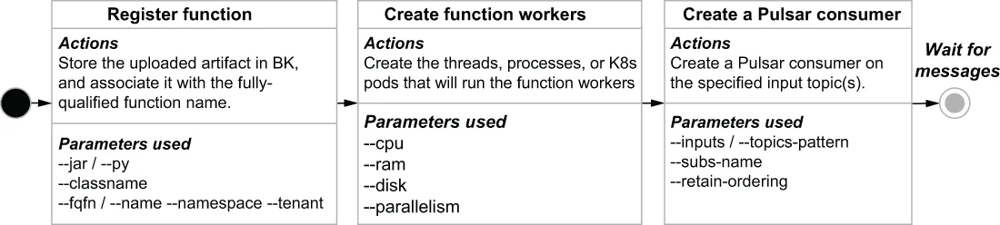

As we saw in the previous section, there are quite a few configuration parameters available when creating and updating a function. In this section, we will cover how some of those parameters are used within the Pulsar function deployment life cycle. When a function is first created, the associated library bundle is stored in Apache BookKeeper so it can be accessed by any Pulsar broker node in the cluster. The bundle is associated with the fully qualified function name, which is a combination of the tenant, namespace, and function name to ensure that it is globally unique across the Pulsar cluster.
正如我们在上一节中所看到的，在创建和更新一个函数时有相当多的配置参数可用。在本节中，我们将介绍其中一些参数是如何在 Pulsar function 的部署生命周期中被使用的。当一个函数初次被创建时，与之关联的库包（bundle）会被存放到 Apache BookKeeper 中，以便集群中任何 Pulsar broker 节点都能访问它。该包与完全限定的函数名相关联，后者由租户、命名空间和函数名组合而成，以确保它在整个 Pulsar 集群中是全局唯一的。

Figure 4.9 The Pulsar function deployment life cycle
图 4.9 Pulsar function 的部署生命周期
When a Pulsar function is first created, the steps shown in figure 4.9 are performed in sequence. After the function is registered and all its details are persisted to BookKeeper, function workers are created based on the provided configuration parameters and the Pulsar cluster’s deployment mode (which we will discuss in the next section). The function workers are the runtime instantiations of the Pulsar function code and can be threads, processes, or Kubernetes pods. Lastly, within each function worker, a Pulsar consumer and subscription is created on the configured input topics. The function workers then await the arrival of incoming messages and perform their processing logic on the incoming messages.
当一个 Pulsar function 初次被创建时，图 4.9 中所示的各个步骤会被依次执行。在该函数被注册、并且它的全部细节都被持久化到 BookKeeper 之后，会根据所提供的配置参数以及 Pulsar 集群的部署模式（我们将在下一节讨论）来创建 function worker。这些 function worker 是 Pulsar function 代码的运行时实例，可以是线程、进程或 Kubernetes pod。最后，在每个 function worker 内部，会在所配置的输入主题上创建一个 Pulsar 消费者和订阅。随后这些 function worker 就等待传入消息的到达，并对传入的消息执行它们的处理逻辑。